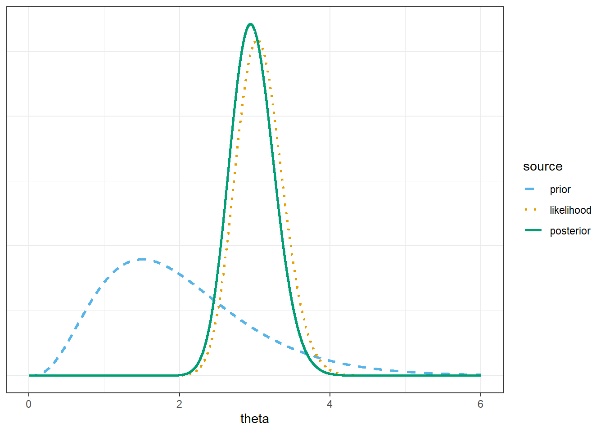
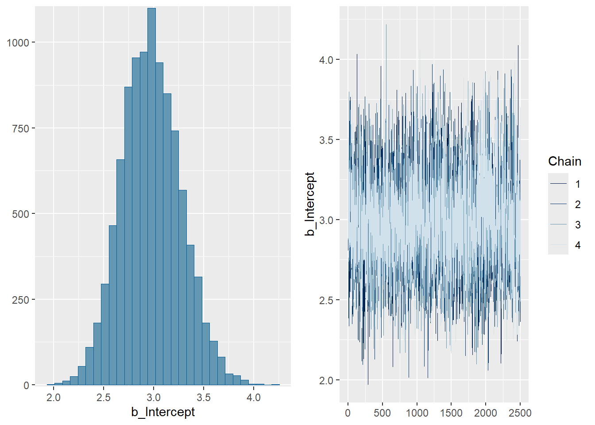
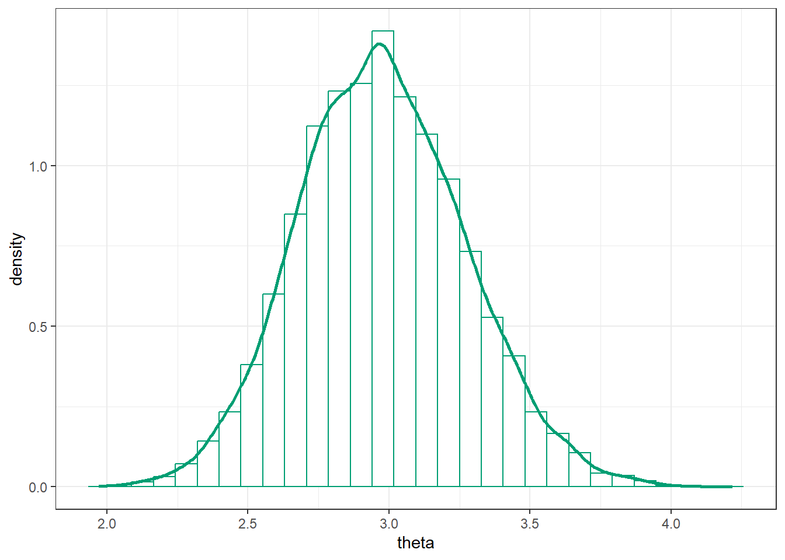
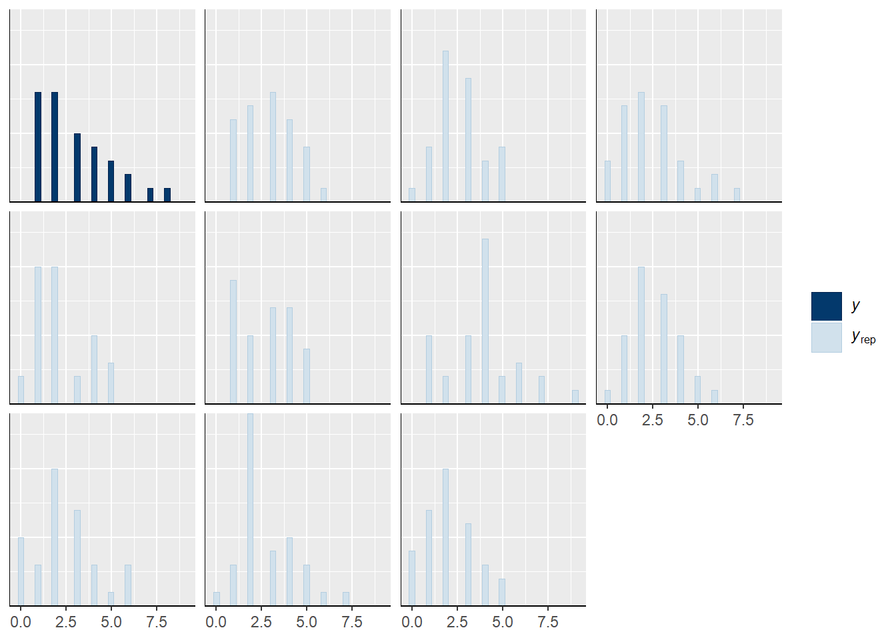
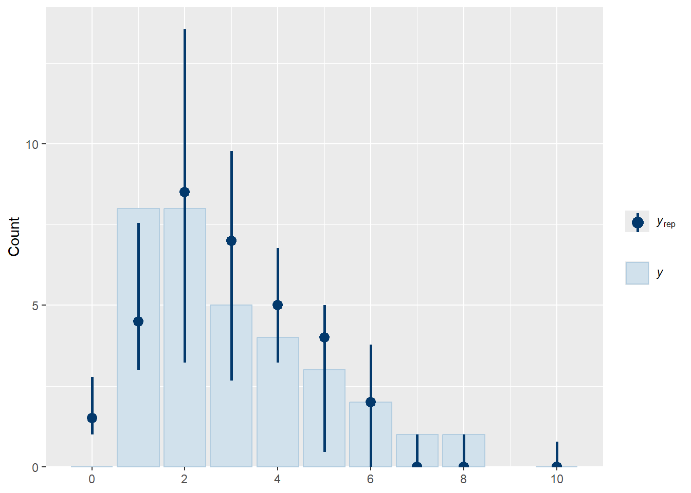
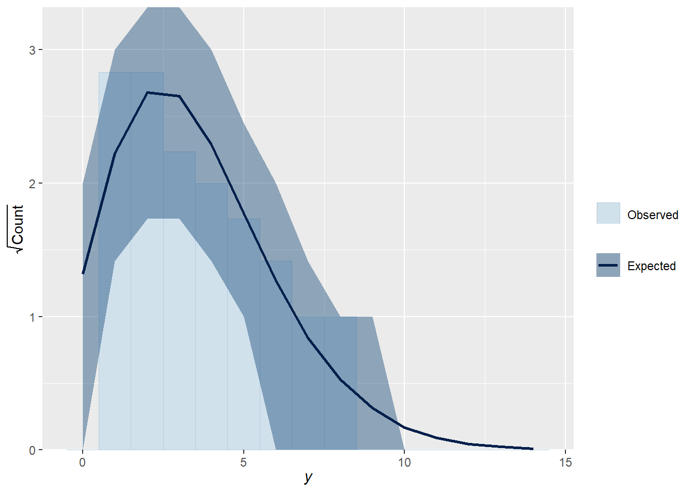

We have covered in some detail the problem of estimating a population proportion for a binary categorical variable. In these situations we assumed a Binomial likelihood for the count of “successes” in the sample.
However, a Binomial model has several restrictive assumptions that might not be satisfied in practice.
Poisson models are more flexible models for count data.
Example 15.1 Let \(y\) be the number of home runs hit (in total by both teams) in a randomly selected Major League Baseball game.
In what ways is this like the Binomial situation? (What is a trial? What is “success”?)
In what ways is this NOT like the Binomial situation?
Poisson distributions are often used to model the distribution of variables that count the number of “relatively rare” events that occur over a certain interval of time or in a certain location
A discrete random variable \(Y\) has a Poisson distribution with parameter \(\theta>0\) if its probability mass function satisfies \[\begin{align*}
f(y|\theta) & = \frac{e^{-\theta}\theta^y}{y!}, \quad y=0,1,2,\ldots
\end{align*}\]
If \(Y\) has a Poisson(\(\theta\)) distribution then \[\begin{align*}
\text{E}(Y) & = \theta\\
\text{Var}(Y) & = \theta
\end{align*}\]
Poisson aggregation. If \(Y_1\) and \(Y_2\) are independent, \(Y_1\) has a Poisson(\(\theta_1\)) distribution, and \(Y_2\) has a Poisson(\(\theta_2\)) distribution, then \(Y_1+Y_2\) has a Poisson(\(\theta_1+\theta_2\)) distribution.
Example 15.2 Suppose the number of home runs hit per game (by both teams in total) at a particular Major League Baseball park follows a Poisson distribution with parameter \(\theta\).
Sketch your prior distribution for \(\theta\) and describe its features. What are the possible values of \(\theta\)? Does \(\theta\) take values on a discrete or continuous scale?
Suppose \(y\) represents a home run count for a single game. What are the possible values of \(y\)? Does \(y\) take values on a discrete or continuous scale?
Gamma distributions are can be used as prior distributions for parameters that take positive values, \(\theta>0\).
A continuous RV \(U\) has a Gamma distribution with shape parameter\(\alpha>0\) and rate parameter\(\lambda>0\) if its density satisfies \[
f(u) \propto u^{\alpha-1}e^{-\lambda u}, \quad u>0,
\]
It can be shown that a Gamma(\(\alpha\), \(\lambda\)) density has \[\begin{align*}
\text{Mean (EV)} & = \frac{\alpha}{\lambda}\\
\text{Variance} & = \frac{\alpha}{\lambda^2}
\\
\text{Mode} & = \frac{\alpha -1}{\lambda}, \qquad \text{if $\alpha\ge 1$}
\end{align*}\]
(a) Rate parameter 1, and different shape parameters
(b) Shape parameter 3, and different rate parameters
Figure 15.1: Gamma densities
Example 15.3Figure 15.1 shows a few examples of Gamma distributions.
The plot on the left above contains a few different Gamma densities, all with rate parameter \(\lambda=1\). Match each density to its shape parameter \(\alpha\); the choices are 1, 2, 5, 10.
The plot on the right above contains a few different Gamma densities, all with shape parameter \(\alpha=3\). Match each density to its rate parameter \(\lambda\); the choices are 1, 2, 3, 4.
Example 15.4 Suppose the number of home runs hit per game (by both teams in total) at a particular Major League Baseball park follows a Poisson distribution with parameter \(\theta\). We’ll first use grid approximation to approximate the posterior distribution of \(\theta\) given sample data. We’ll start with a discrete prior for \(\theta\) to illustrate ideas. Suppose that \(\theta\) can only take values 0.5, 1.5, 2.5, 3.5, 4.5, with respective probabilities 0.13, 0.45, 0.28, 0.11, 0.03.
Suppose a single game with 3 home runs is observed. Find the posterior distribution of \(\theta\). In particular, how do you determine the likelihood column?
Suppose that we observe 4 games with a total of 6 home runs. Find the posterior distribution of \(\theta\). In particular, how do you determine the likelihood column?
Example 15.5 Now let’s consider some real data. Assume home runs per game at Citizens Bank Park (Phillies!) follow a Poisson distribution with parameter \(\theta\). Assume as a prior for \(\theta\) a Gamma distribution with shape parameter \(\alpha = 4\) and rate parameter \(\lambda = 2\).
Section 15.1.3 summarizes data for the 2020 season1. There were 97 home runs in 32 games.
Use grid approximation to compute the posterior distribution of \(\theta\). Plot the prior, (scaled) likelihood, and posterior. (Note: you will need to cut the grid off at some point. While \(\theta\) can take any value greater than 0, the interval [0, 8] accounts for 99.99% of the prior probability.)
Write an expression for the prior distribution of \(\theta\).
Write an expression for the likelihood function given the sample data (97 home runs in 32 games).
Write an expression for the posterior distribution of \(\theta\) given the sample data (97 home runs in 32 games). Identify by the name the posterior distribution and the values of relevant parameters. Compare to the results of the grid approximation.
Find and interpret posterior 50%, 80%, and 98% credible intervals for \(\theta\).
Express the posterior mean as a weighted average of the prior mean and the sample mean. How might you interpret the \(\alpha\) and \(\beta\) parameters in the Gamma prior distribution?
Gamma-Poisson model. Consider a measured variable \(y\) which, given \(\theta\), follows a Poisson\((\theta)\) distribution. Let \(\bar{y}\) be the sample mean for a random sample of size \(n\). Suppose \(\theta\) has a Gamma\((\alpha, \lambda)\) prior distribution. Then the posterior distribution of \(\theta\) given \(\bar{y}\) is the Gamma\((\alpha+n\bar{y}, \lambda+n)\) distribution.
In a sense, you can interpret \(\alpha\) as “prior total count” and \(\lambda\) as “prior sample size”, but these are only “pseudo-observations”. Also, \(\alpha\) and \(\lambda\) are not necessarily integers.
Note that if \(\bar{y}\) is the sample mean count is then \(n\bar{y} = \sum_{i=1}^n y_i\) is the sample total count.
Prior
Data
Posterior
Total count
\(\alpha\)
\(n\bar{y}\)
\(\alpha+n\bar{y}\)
Sample size
\(\lambda\)
\(n\)
\(\lambda + n\)
Mean
\(\frac{\alpha}{\lambda}\)
\(\bar{y}\)
\(\frac{\alpha+n\bar{y}}{\lambda+n}\)
The posterior total count is the sum of the “prior total count” \(\alpha\) and the sample total count \(n\bar{y}\).
The posterior sample size is the sum of the “prior sample size” \(\lambda\) and the observed sample size \(n\).
The posterior mean is a weighted average of the prior mean and the sample mean, with weights proportional to the “sample sizes”.
Example 15.7 Continuing Example 15.5. Continuing the previous example, assume home runs per game at Citizens Bank Park follow a Poisson distribution with parameter \(\theta\). Assume for \(\theta\) a Gamma prior distribution with shape parameter \(\alpha = 4\) and rate parameter \(\lambda = 2\). Consider the 2020 data in which there were 97 home runs in 32 games.
Describe in full detail how you could use naive simulation to approximate the posterior distribution of \(\theta\).
Write brms code to approximate the posterior distribution. Run the code and compare to the previous results.
How could you use simulation to approximate the posterior predictive distribution of home runs in a game?
Use the simulation from the previous part to find and interpret a 95% posterior prediction interval.
Is a Poisson model a reasonable model for the data? How could you use posterior predictive simulation to simulate what a sample of 32 games might look like under this model. Simulate many such samples. Does the observed sample seem consistent with the model?
Regarding the appropriateness of a Poisson model, we might be concerned that there are no games in the sample with 0 home runs. Use simulation to approximate the posterior predictive distribution of the number of games in a sample of 32 with 0 home runs. From this perspective, does the observed value of the statistic seem consistent with the Gamma-Poisson model?
# gridtheta =seq(0, 8, 0.001)# priorprior =dgamma(theta, shape =4, rate =2)prior = prior /sum(prior)# datan =length(data$hr) # sample size (32)y =sum(data$hr) # total sample count (97)# likelihood, using Poisson(n * theta) for sample size nlikelihood =dpois(y, n * theta) # function of theta# posteriorproduct = likelihood * priorposterior = product /sum(product)# bayes tablebayes_table =data.frame(theta, prior, likelihood, product, posterior)

15.1.5 Mathematical derivation of posterior
The prior Gamma(4, 2) distribution has pdf \[
\pi(\theta) \propto \theta^{4-1}e^{-2\theta}, \qquad \theta > 0.
\]
By Poisson aggregation, the total number of home runs in 32 games follows a Poisson(\(32\theta\)) distribution. The likelihood is the probability of observing a value of 97 (for the total number of home runs in 32 games) from a Poisson(\(32\theta\)) distribution.
Next we fit the model to the data using the function brm. The three inputs are:
Input 1: the data data = data
Input 2: model for the data (likelihood) family = poisson(link = identity) y ~ 1 # linear model with intercept only
Input 3: prior distribution for parameters prior(gamma(4, 2), lb = 0, class = Intercept)
Other arguments specify the details of the numerical algorithm; our specifications below will result in 10000 \(\theta\) values simulated from the posterior distribution. (It will simulate 3500 values (iter), discard the first 1000 (warmup), and then repeat 4 times (chains).)
fit <-brm(data = data, family =poisson(link = identity),formula = hr ~1,prior(gamma(4, 2), lb =0, class = Intercept), # gamma(shape, rate)iter =3500,warmup =1000,chains =4,refresh =0)
Compiling Stan program...
Start sampling
plot(fit)

posterior = fit |>spread_draws(b_Intercept) |>rename(theta = b_Intercept)
posterior |>ggplot(aes(x = theta)) +geom_histogram(aes(y =after_stat(density)),col = bayes_col["posterior"], fill ="white") +geom_density(linewidth =1, col = bayes_col["posterior"]) +theme_bw()

# posterior meanmean(posterior$theta)
[1] 2.976134
# posterior sdsd(posterior$theta)
[1] 0.295366
# posterior quantiles are endpoints of credible intervalsquantile(posterior$theta, c(0.01, 0.10, 0.25, 0.50, 0.75, 0.90, 0.99))
Posterior predictive interval, with a lower bound of 0.
quantile(y_sim, 0.95)
95%
6
15.1.8 Posterior predictive checking: samples
Here is a plot of some simulated samples based on the posterior model, compared with the sample data.
pp_check(fit, type ="hist")
Using 10 posterior draws for ppc type 'hist' by default.
`stat_bin()` using `bins = 30`. Pick better value `binwidth`.

Here is a bar plot of the observed data, with 95% intervals
pp_check(fit, type ="bars", prob =0.95)
Using 10 posterior draws for ppc type 'bars' by default.

For count data, a rootogram can be helpful.
pp_check(fit, type ="rootogram")
Using all posterior draws for ppc type 'rootogram' by default.

15.1.9 Posterior predictive checking: count 0s
Posterior predictive distribution of number of games with 0 HRs in samples of size 32
Simulate \(\theta\) from posterior distribution (brms already did this)
Given \(\theta\) simulate a sample of size 32 from a Poisson(\(\theta\)) distribution
Count the number of games (out of 32) in the sample with 0 HRs, call this \(T\)
Repeat many times and summarize the values of \(T\), then compare with the observed \(T\) (which is 0).
Below we simulate 312 samples of size 32.
# Group the 10000 simulated values of y into 312 samples of size 32y_sim_samples =matrix(y_sim,ncol = n,nrow =trunc(length(y_sim) / n))
Warning in matrix(y_sim, ncol = n, nrow = trunc(length(y_sim)/n)): data length
[10000] is not a sub-multiple or multiple of the number of rows [312]
# define function that counts the 0s in a samplecount0 <-function(u) sum(u ==0)# posterior predictive checkppc_stat(data$hr, y_sim_samples, stat ="count0")
`stat_bin()` using `bins = 30`. Pick better value `binwidth`.